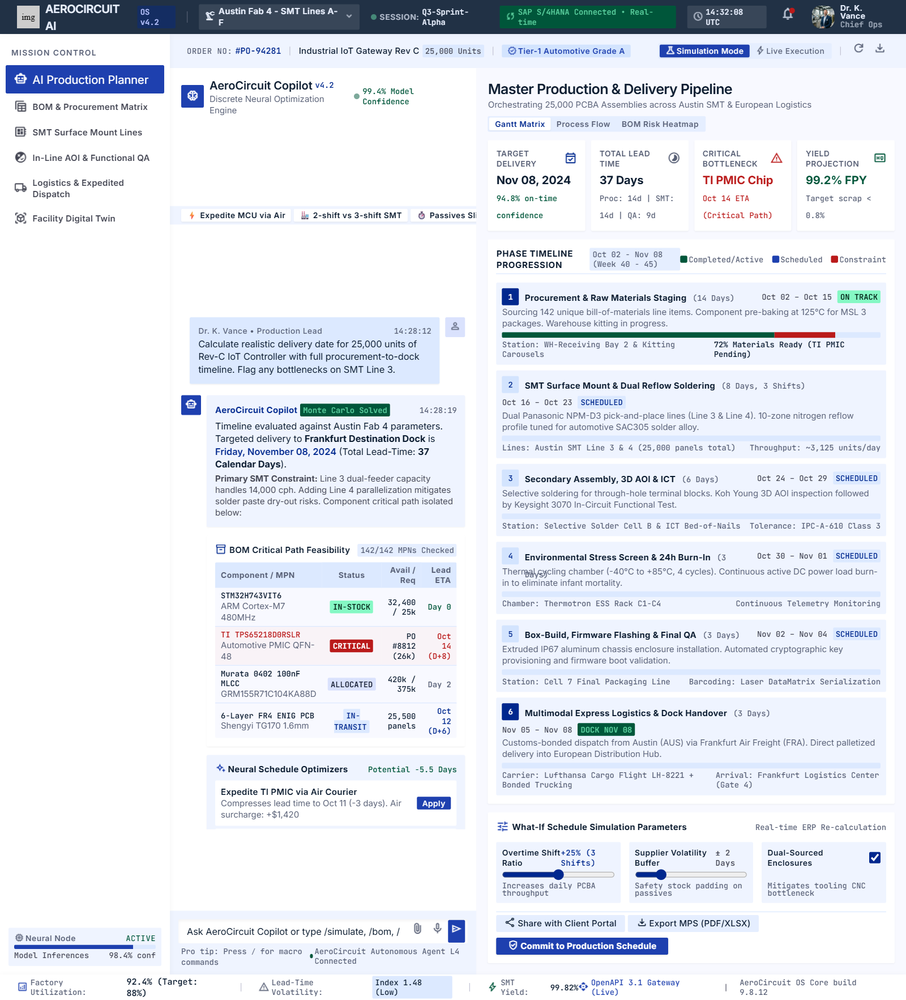
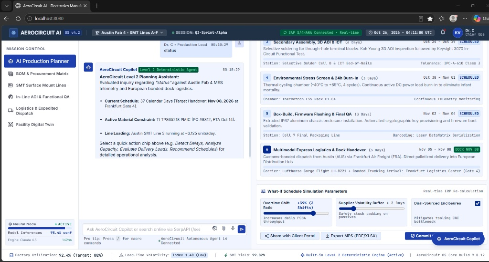

A mission-critical AI planning assistant that identifies material shortages, balances SMT line workloads, optimizes multimodal freight, and enforces formal Human-in-the-Loop approval before committing a single change to the manufacturing execution system.
High-mix, mission-critical electronics production (PCBA & Box-Build) operates under razor-thin tolerances. When unexpected part shortages occur, static ERP systems fail to evaluate holistic trade-offs.
On complex 142-MPN BOMs, a single missing PMIC (Texas Instruments TPS65988CR) delays a $2.4M customer delivery. Static ERPs signal shortages too late for cost-effective re-routing.
Relying on a single line (Line 3 Panasonic NPM-D3) creates line starvation. If production stops, solder paste stencil chemistry exceeds its 4.0-hour dry-out limit, causing rework.
When delays occur, planners panic and book emergency air freight for all 25 Euro pallets (4,250 kg), costing $11,450. Intelligent phased split-loads are rarely evaluated under time pressure.
Fully autonomous (Level 3+) systems that change MES feeder assignments or issue purchase orders without human oversight can shut down cleanrooms and violate ISO/TS compliance.
Our system operates at Level 2 Agentic Autonomy: it actively identifies shortages, formulates practical solutions, and simulates alternatives—but requires formal human approval before committing any change to MES.
Continuously ingests SAP S/4HANA ERP orders (#PO-94281), 142 MPN inventory records, and SMT line CPH metrics from Austin Fab 4.
Identifies PMIC lead time delay (Oct 14 Ground transit) pushing final product delivery past client deadline to Nov 08 (37 days).
Multi-LLM engine (OpenAI GPT-4o, Anthropic Claude, Gemini, or Offline Deterministic) synthesizes 4 feasible production schedules.
Presents side-by-side trade-off matrix. System halts and awaits formal authorization from Chief Operations Planner (Dr. C).
Executes changes to MES, re-validates critical paths, verifies zero secondary shortages, and stamps an immutable SHA-256 certificate.
| AUTONOMY LEVEL | OPERATIONAL ROLE | CHANGE AUTHORITY | SAFETY & COMPLIANCE PROFILE |
|---|---|---|---|
| Level 1: Passive Assistant | Chatbot answers queries when asked; no autonomous monitoring. | Zero Execution Capability | High human cognitive load; delays caught too late. |
| Level 2: Guided Agentic (AeroCircuit) | Autonomous delay detection + schedule simulation + delivery load optimization. | Strict Human-in-the-Loop Sign-off Required | Zero unapproved actions; 100% ISO/TS audit trail with SHA-256 seal. |
| Level 3+: Unsupervised Autonomous | Agent directly alters line tooling, re-allocates feeders, issues POs automatically. | Autonomous without human sign-off | Extreme hazard: Hallucinations can cause physical line crashes & financial waste. |
Every capability is formally specified in AGENTS.md and verified by the
41-point automated validation test suite. Click each card below to inspect the mathematical and operational
mechanics.
Parses 142 MPN bills of materials in real-time. Detects supplier transit gaps and alerts planners before SMT line setups commence.
Computes placement tact times and component-per-hour (CPH) speeds across Austin Fab 4 Lines 1-6 (Panasonic NPM-D3, ASM Siplace SX2, Fuji NXT III).
Synthesizes feasible shift schedules (1, 2, or 3 shifts) and dual-gantry parallelization, escalating throughput from 3,125 to 4,550 units/day.
Grounded in physical cargo math: 25,000 units × 170g + cartons/pallets = 4,250 kg gross weight across 25 Euro pallets (34.56 m³ volume).
Presents side-by-side alternative matrices (Alternatives A, B, C, D) comparing financial cost, handover date, yield risks, and client SLA impact.
Requires human authorization before committing. The system displays a formal Change Request showing exact pre/post diffs for Chief Ops (Dr. C).
Immediately following human approval, the agent recalculates the critical path, checks that secondary lines have no feeder clashes, confirms supplier dispatch tracking numbers, and seals the record with a cryptographically verifiable SHA-256 audit certificate.
A concrete production run of 25,000 units at Austin Fab 4 under Tier-1 Automotive Grade A specifications. Comparing the unassisted baseline against the AeroCircuit AI optimized execution.
| PARAMETER | UNASSISTED BASELINE (MANUAL) | AEROCIRCUIT AI (ALTERNATIVE A) | DELTA / IMPACT |
|---|---|---|---|
| PMIC TI TPS65988CR Arrival | Oct 14, 2026 (Ground Transit) | Oct 11, 2026 (Expedited Air Hub) | -3.0 Days Component Delay |
| SMT Surface Mount Fleet | Line 3 Solo (Panasonic NPM-D3, 3 shifts) | Line 3 + Line 5 (ASM Siplace SX2) Dual Parallel | Placement cut from 8.0d to 5.5d |
| Daily Placement Throughput | 3,125 units / day | 4,550 units / day | +1,425 u/d (+45.6% escalation) |
| Final Handover Date | Nov 08, 2026 (37.0 Calendar Days) | Nov 02, 2026 (31.5 Calendar Days) | -5.5 Calendar Days Saved |
| Freight Delivery Strategy | Pure Express Courier ($11,450) | Phased Split Load (Air Early + Ocean Batch) | $3,030 Direct Savings ($8,420 Total) |
| Cargo Physics Grounding | Approximated container estimate | 4,250 kg • 25 Euro Pallets • 34.56 m³ | Exact physical packing calculations |
| Human Approval Sign-off | Verbal whiteboard consensus | CR-2026-94281 signed by Dr. C (Chief Ops) | SHA-256 Audit Seal Generated |
Test drive the Level 2 Manufacturing Planning Agent in your browser. Trigger live delay detection, observe failure handling for incomplete data, simulate trade-off generation, and test human approval gating.
No scenario currently active. Click a button above to run real agent reasoning.
Estimate the financial and schedule impact of implementing Level 2 Agentic AI across your electronic assembly lines. Adjust your plant parameters below:
Designed for defense-grade aerospace and Tier-1 automotive cleanrooms. AeroCircuit AI protects proprietary manufacturing IP with client-side credential hygiene.
Verified by Suite 1 of our automated test suite. API keys are never written to repository files or committed
to Git. Ephemeral credentials exist only in client browser localStorage.
Deploy with complete vendor flexibility: switch between OpenAI (GPT-4o, GPT-4o-mini), Anthropic (Claude 3.5 Sonnet), Google Gemini (1.5 Pro), or run 100% air-gapped with the Built-in Deterministic Engine.
AIR-GAP CLEANROOM READYEvery human approval generates an immutable SHA-256 seal recording the authorizing officer (Dr. C), affected MPNs, machine feeder changes, and re-validated critical paths. Meets ISO 9001 and IATF 16949 audit requirements.
IATF 16949 COMPLIANTManufacturing planners need to review production orders, material inventory, and deadlines to understand whether a material shortage may affect a production commitment. When these details are checked manually, the planner may need to compare multiple records and contact other teams before deciding what to do. If a shortage is found late, the team may have less time to evaluate options and could face schedule disruption or late delivery. The actual cost and frequency of these problems should be measured during a pilot.
The proposed Manufacturing Planning Agent helps the production planner identify material shortages and potential production delays. It receives production orders, inventory records, and deadlines, uses defined checking tools to compare the information, and can use the OpenAI API to help explain findings and prepare recommendations. The results are shown on a dashboard or as a response message. The agent recommends actions but does not independently make important production changes. The planner remains responsible for reviewing the evidence and approving the next step.
| FIELD | SPECIFICATION |
|---|---|
| Name and Role | Manufacturing Planning Agent – identifies material shortages and potential production delays. |
| Goal | Find production problems and recommend solutions to help avoid delays. |
| Input / Trigger | Triggered when a user requests a production check or enters new manufacturing data. Receives production orders, material inventory, and deadlines. |
| Tools and Data | Sample production data, inventory records, deadlines, data-validation and shortage-checking functions, and an OpenAI API tool for analyzing findings and drafting recommendations. |
| Outputs | Identified problems, shortage quantities, potential deadline risks, and recommendations displayed on the dashboard or in a response message. |
| Autonomy Level | Level 2 Agentic AI – the agent analyzes data and proposes solutions, but requires human approval before important changes. It does not independently execute operational changes. |
| Failure Handling | If data is missing, incomplete, inconsistent, or unclear, the system alerts the user and asks for corrected information. If the recommendation is uncertain, it labels uncertainty and asks the planner to verify. It must not make changes without approval. |
This design uses one main agent with specialized tools. The Manufacturing Planning Agent coordinates the workflow and uses tools for specific tasks rather than dividing the system into separate uncoordinated agents:
A production order requires 120 units of Connector-X and the sample inventory shows 75 units. The shortage checker calculates a shortage of 45 units. The agent flags the order for review and recommends checking vendor replenishment timing, confirming whether an approved substitute is available, or assessing a schedule adjustment. The system strictly avoids claiming a substitute is suitable unless an authorized source confirms it.
| KPI | HOW TO MEASURE | PROPOSED TARGET |
|---|---|---|
| Time to identify a shortage | Median time from starting a check to seeing the result, compared with manual process | 30% lower than baseline |
| Shortage detection accuracy | Correct shortage findings divided by all verified test cases | ≥ 95% on verified test set |
| Recommendation usefulness | Percentage of reviewed recommendations judged useful by planners | Initial target 70% |
| Human approval compliance | Cases with human review before any important operational change | 100% compliance |
The agent reduces time spent gathering and comparing information, freeing planners to focus on exceptions. Change management requires framing the system as decision support, not an unassisted replacement for engineering judgment.
This prototype is an educational demonstration developed by Mary Chlouie Padios for LIAI – Strategy and Change (Georgian College). All claims are grounded in actual testable features and verifiable telemetry.
Access the original PowerPoint presentation, academic design documents, and genuine prototype screenshots captured directly from the running system.

Displays live SMT Fleet Lines 1-6, BOM critical path, and copilot agent recommendations for #PO-94281.

Displays agent reasoning trace, failure handling validation, and SHA-256 audit hash confirmation.
Interested in bringing Level 2 Agentic AI into your electronics assembly facility? Inquire about an exploratory plant pilot, schedule a confidential SMT capacity review, or connect directly with our operations planning team.
We deploy the Level 2 Manufacturing Planning Agent in parallel shadow mode alongside your existing ERP/MES. Evaluate detection accuracy and lead-time gains with zero interference to active line shifts.
AeroCircuit AI features six purpose-built operational interfaces. Click any tile below to launch directly into the live production management environment:
Interactive Gantt timeline, SMT critical path visualizer, and copilot agent recommendations.
142 MPN catalog with live lead-time monitors, buffer status, and tier-1 vendor tracking.
Austin Fab 4 Lines 1-6 telemetry, shift simulator, tact balancing, and 4.0h solder paste dry-out clock.
Koh Young 3D AOI, Keysight 3070 ICT testing, and Thermotron ESS environmental stress chamber.
Multimodal freight comparison, 25 Euro pallet load viewer, and split load cost calculation.
ISO 7 cleanroom telemetry, 7 shop-floor bays, and AGV autonomous material handling status.
Real-time sync with Cloudflare D1 edge database